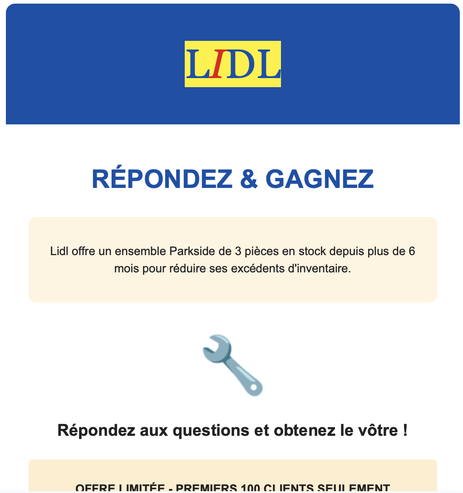

Exposing deceptive practices in user experience
I got this email from "Lidl France" that uses a copied logo and urgent messaging to deceive users:
This is a textbook example of a dark pattern: brand impersonation. It relies on users recognizing the brand’s logo, creates urgency with phrases like “limited offer,” and promises a reward to pressure users into acting quickly without questioning authenticity.
Placeholder for the second dark pattern.
Placeholder for the third dark pattern.